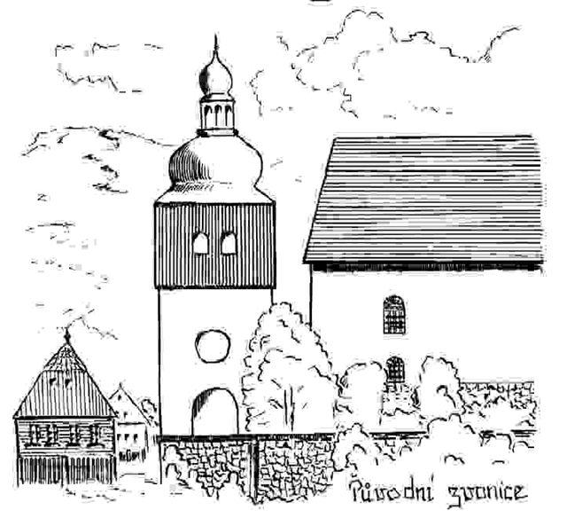
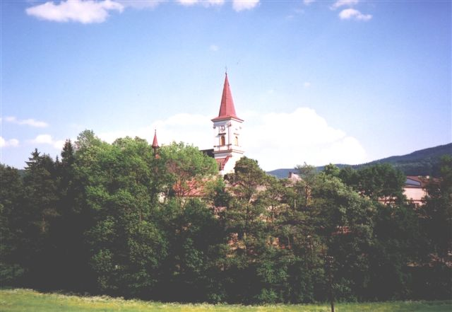

První
písemná zmínka o kostele se datuje roku 1369. Nejspíše byl však farní
již před rokem 1354. První kostelík byl dřevěný, s dřevěnou zvonicí opodál.
Roku 1670 byl prohnilý dřevěný kostel stržen a následně vystavěn nový
z kamene a cihel. Zůstal neohozen až do roku 1720, kdy byl pravděpodobně
vysvěcen. V roce 1685 čekal stejný osud, tedy stržení i dřevěnou zvonici, která byla nahrazena novou, kamennou, rovněž samostatně stojící. Roku 1885 byla zbourána kamenná zvonice a postavena nová renesanční věž navazující na loď kostela – nynější podoba kostela. |

Kostel stojí na vyvýšeném místě za náměstím, čelní
portál směřuje k západu. Celý je ve stylu pozdně renesančním, je jednolodní
s trojboce uzavřeným presbytářem a sakristií na severní straně. Loď je
zaklenuta valivou klenbou s výsečemi pro okna. U kostela stojí fara z roku 1786. |
První zmínka o varhanách je až roku 1833. Přičiněním velkého sucha
byl starý pozitiv již nefunkční, a tak byly roku 1850 zakoupeny nové
varhany z rychnovských dílen od varhanáře Adama Hanische. Při stavbě
věže roku 1885 musely být kvůli změnám prostoru kůru přestavěny.
|
| I. Manuál | II. Manuál | Pedál | |||||
| Portunal | 8' | Flauta | 8' | Subbass | 16' | ||
| Flauta | 4' | Oktáva | 2' | Principalbass | 8' | ||
| Gamba | 8' | Salicionál | 8' | Cello | 8' | ||
| Mixtura | 11/3' | Principal | 4' | I/P | 8' | ||
| Principal | 8' | ||||||
| Oktáva | 4' | ||||||
| Flauta | 8' | ||||||
| II/I | 8' | ||||||
Prospektu varhan vévodí principálové píšťaly ozdobené
vyřezávanými pozlacenými motivy. Opticky je členěn na tři části rozdělené
na C a Cis stranu..
Varhany mají dva manuály (C – f3) a pedál (C-h), mechanickou
trakturu a zásuvkovou vzdušnici s tónovými kancelami, která je rozpůlená
na C a Cis stranu. Nacházejí se zde dvě mechanické spojky II/I a I/P ovládané
šlapkami nad prahem pedálu. Registratura je ovládána pomocí manubrií.
Původní nástroj z roku 1850 měl vestavěný hrací stůl. To znamená, že varhaník
seděl v jakémsi výklenku a hrál zády k presbytáři. Počátkem minulého století
však byly přestavěné. Podle historika je to však veliká škoda. Celý nástroj
je laděn o 1/4 tónu výše než by měl být, a to díky
zásahu neznámého varhaníka, který pilou seřezal všechny píšťaly. Páčkou
pod hracím stolem se ovládá kalkantník – zvoneček na kalkanta (člověka,
který šlapal měchy). |
Pohled na hrací stůl a pedál. |
Varhany jsou situovány uprostřed kůru čelem k presbytáři.
Varhaník sedí u hracího stolu zády ke skříni. Měch (dvoudílný) se nachází
za varhanami ve výklenku. Elektrický ventilátor je ukrytý ve vedlejší
místnosti, která slouží jako sklad kostelních věcí. Ten již hodně pamatuje,
má „vyklepaná“ ložiska, a proto je jeho chod velmi hlučný i přesto, že
je zatížen velkými kameny kvůli utišení vibrací. |
Měchy. |
Varhany v Machově a jejich život jsou typickou ukázkou nástroje v běžné vesnické (ale i městské) farnosti. Po mnoha desetiletích vývoje se díky zanedbané údržbě a v poslední době i nedostatku financí a často i nezájmu ze strany správců farností (obecně, ne v tomto konkrétním případě) dostávají do stavu, kdy jsou udržovány v chodu jen díky značnému úsilí a obětavosti varhaníků a (v dobrém slova smyslu) amatérských nadšenců. Ti nemají (a ani nemohou mít) potřebný rozsah znalostí, potřebné materiály a nářadí a nemohou tak rovnocenně nahradit práci varhanáře. Stav mnoha podobných nástrojů se velmi rychle zhoršuje a pokud nebude nalezeno nějaké "systémové" řešení, bude rychle na kůrech našich kostelů přibývat varhan ve funkci dekorace a stále častěji se budeme setkávat s jejich náhradou elektronickými "kvákadly". Aktualita (9/07): V srpnu roku 2007 se varhany v Machově konečně
dočkaly pořádné opravy, kdy byly varhanářskou dílnou Ivana Červenky
z Jakubovic u Lanškrouna naladěny, vyčištěny, byla vyměněna
péra ve vzdušnicích a odstraněny veškeré závady. V dohledné době se
ještě chystá výměna ventilátoru. Díky této opravě se nástroj dočká více
varhanních koncertů a bude zařazen i do Orlicko-kladského varhanního
festivalu.
|
| Autor stránek děkuje panu Tomáši Weissarovi z Machova za poskytnutí fotografií a textových podkladů pro tuto stránku. |